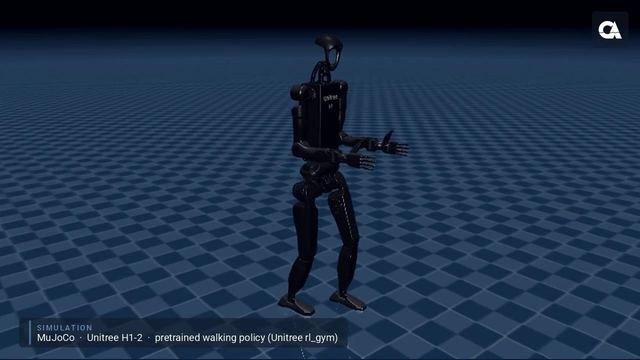

Research
How decentralized agents learn in simulation, and how that behavior carries over to software and edge devices.
Behavioral design for agents Savannah, Georgia
We design and test how AI agents act before they meet the world.
Make coastal Georgia the place where agent behavior gets designed, tested and trusted.

Latest from Proof of Work
This week we ran walking and hand tests in MuJoCo.
What we do
Our subject is the behavior of intelligent agents: how they learn, what they optimize for, and how they act once they are out in the world.
The intelligence that runs within public systems will be shaped somewhere, by someone. We want a meaningful share of it shaped here, by people who live here, with tools anyone can inspect.
How decentralized agents learn in simulation, and how that behavior carries over to software and edge devices.
Experiments taken out of the lab and into real places, built alongside the people who know those places best.
Everything we use is open, so the work can be checked, repeated and carried on by anyone.
Selected work
Making behavior visible, beginning with simulated environments.
Fly TBD in a browser physics sim (estimated parameters).
Play the simWe've begun development on our first robotic system: a small robot that rolls on the ground and flies over obstacles like stairs.
Concept animation · working name TBD
What we believe
Built with people. Grounded in place. Open enough to earn trust.
Those who work alongside an agent should have a say in how it behaves.
Systems belong close to where they run, shaped by people who know that place.
Our tools and methods are open. Reward functions are published, because they determine what an agent does.
Every dataset records who made it. Anyone who works with us can leave with everything.
Monitoring and constraints are in place before an agent runs.
We favor many small agents on edge devices, close to the people they serve, over one distant system.